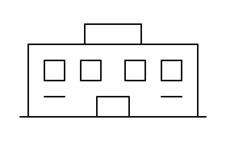

Страхов Евгений Александрович
Методист
Москва, ул. Елецкая, д. 31, к. 2

Начальная школа. Состав классов и режим работы здания: [УТОЧНИТЬ].
В разделе допобразования указаны другие адреса на Воронежской улице и Гурьевском проезде. Фактическое место занятий начальной школы: [УТОЧНИТЬ].
Почтовый индекс: [УТОЧНИТЬ].
Методист
Приём посетителей: Вторник, 16:00–17:30. По предварительной записи.
+7 (980) 186-05-24Точный маршрут, вход и ориентиры: [УТОЧНИТЬ]. Условная схема показывает только место будущей иллюстрации.
Открыть Яндекс Карты